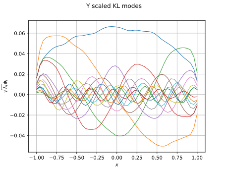
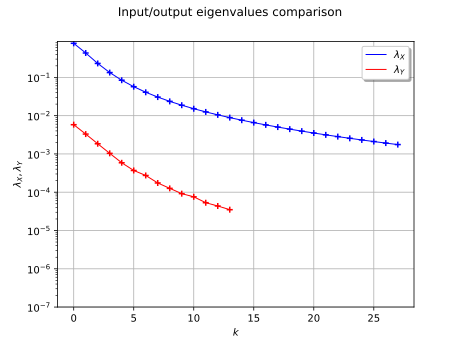
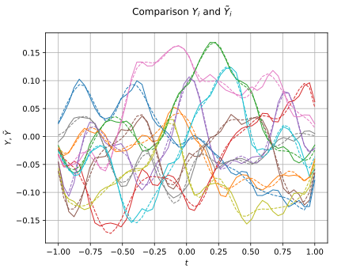
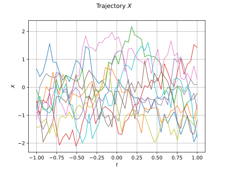
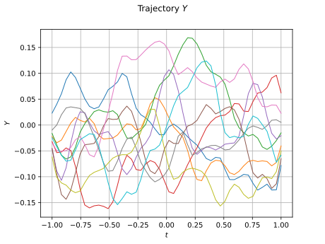

Note
Go to the end to download the full example code.
Metamodel of a field function¶
In this example we create a metamodel of a field function following these steps:
Create a field model over an 1-d mesh ;
Create a Gaussian process ;
Karhunen-Loeve decomposition of a process with known covariance function ;
Karhunen-Loeve decomposition of a process with known trajectories ;
Fields projection ;
Functional chaos decomposition between the coefficients of the input and output processes ;
Build a metamodel of the whole field model ;
Validate the metamodel.
import openturns as ot
import openturns.viewer as otv
Create the input model.
print("Create the input process")
# Domain bound
a = 1
# Reference correlation length
b = 0.5
# Number of vertices in the mesh
N = 50
# Bandwidth of the smoothers
h = 0.05
mesh = ot.IntervalMesher([N - 1]).build(ot.Interval(-a, a))
covariance_X = ot.AbsoluteExponential([b])
process_X = ot.GaussianProcess(covariance_X, mesh)
Create the input process
The next function plots the Karhunen-Loève modes.
def drawKL(scaledKL, KLev, mesh, title="Scaled KL modes"):
graph_modes = scaledKL.drawMarginal()
graph_modes.setTitle(title + " scaled KL modes")
graph_modes.setXTitle("$x$")
graph_modes.setYTitle(r"$\sqrt{\lambda_i}\phi_i$")
data_ev = [[i, KLev[i]] for i in range(scaledKL.getSize())]
graph_ev = ot.Graph()
graph_ev.add(ot.Curve(data_ev))
graph_ev.add(ot.Cloud(data_ev))
graph_ev.setTitle(title + " KL eigenvalues")
graph_ev.setXTitle("$k$")
graph_ev.setYTitle(r"$\lambda_i$")
graph_ev.setAxes(True)
graph_ev.setGrid(True)
graph_ev.setLogScale(2)
bb = graph_ev.getBoundingBox()
lower = bb.getLowerBound()
lower[1] = 1.0e-7
bb = ot.Interval(lower, bb.getUpperBound())
graph_ev.setBoundingBox(bb)
return graph_modes, graph_ev
Compute the decomposition of the input process.
threshold = 0.01
algo_X = ot.KarhunenLoeveP1Algorithm(mesh, process_X.getCovarianceModel(), threshold)
algo_X.run()
result_X = algo_X.getResult()
phi_X = result_X.getScaledModesAsProcessSample()
lambda_X = result_X.getEigenvalues()
graph_modes_X, graph_ev_X = drawKL(phi_X, lambda_X, mesh, "X")
view = otv.View(graph_modes_X)

Sample the input process.
print("Sample the input process")
size = 500
sample_X = process_X.getSample(size)
Sample the input process
Create a class to perform the convolution over a 1-d mesh.
class ConvolutionP1(ot.OpenTURNSPythonFieldFunction):
def __init__(self, p, mesh):
# 1 = input dimension, the dimension of the input field
# 1 = output dimension, the dimension of the output field
# 1 = mesh dimension
super(ConvolutionP1, self).__init__(mesh, 1, mesh, 1)
# Here we define some constants and we set-up the invariant part of the execution
self.setInputDescription(["x"])
self.setOutputDescription(["y"])
vertices = mesh.getVertices()
size = vertices.getSize()
self.mat_W_ = ot.SquareMatrix(size)
for i in range(size):
x_minus_t = (vertices - vertices[i]) * (-1.0)
values_w = p(x_minus_t)
for j in range(size):
self.mat_W_[i, j] = values_w[j, 0]
G = mesh.computeP1Gram()
self.mat_W_ = self.mat_W_ * G
def _exec(self, X):
point_X = [val[0] for val in X]
values_Y = self.mat_W_ * point_X
return [[v] for v in values_Y]
Create the convolution function.
p = ot.SymbolicFunction("x", "exp(-(x/" + str(h) + ")^2)")
myConvolution = ot.FieldFunction(ConvolutionP1(p, mesh))
Sample the output process.
Compute the decomposition of the output process.
algo_Y = ot.KarhunenLoeveSVDAlgorithm(sample_Y, threshold)
algo_Y.run()
result_Y = algo_Y.getResult()
phi_Y = result_Y.getScaledModesAsProcessSample()
lambda_Y = result_Y.getEigenvalues()
graph_modes_Y, graph_ev_Y = drawKL(phi_Y, lambda_Y, mesh, "Y")
view = otv.View(graph_modes_Y)

Compare eigenvalues of X and Y.
graph_ev_X.add(graph_ev_Y)
graph_ev_X.setTitle("Input/output eigenvalues comparison")
graph_ev_X.setYTitle(r"$\lambda_X, \lambda_Y$")
graph_ev_X.setColors(["blue", "blue", "red", "red"])
graph_ev_X.setLegends([r"$\lambda_X$", "", r"$\lambda_Y$", ""])
graph_ev_X.setLegendPosition("upper right")
view = otv.View(graph_ev_X)

Perform the polynomial chaos expansion between Karhunen-Loève coefficients.
print("project sample_X")
sample_xi_X = result_X.project(sample_X)
print("project sample_Y")
sample_xi_Y = result_Y.project(sample_Y)
print("Compute PCE between coefficients")
degree = 1
dimension_xi_X = sample_xi_X.getDimension()
dimension_xi_Y = sample_xi_Y.getDimension()
enumerateFunction = ot.LinearEnumerateFunction(dimension_xi_X)
basis = ot.OrthogonalProductPolynomialFactory(
[ot.HermiteFactory()] * dimension_xi_X, enumerateFunction
)
basisSize = enumerateFunction.getStrataCumulatedCardinal(degree)
adaptive = ot.FixedStrategy(basis, basisSize)
projection = ot.LeastSquaresStrategy(
ot.LeastSquaresMetaModelSelectionFactory(ot.LARS(), ot.CorrectedLeaveOneOut())
)
ot.ResourceMap.SetAsScalar("LeastSquaresMetaModelSelection-ErrorThreshold", 1.0e-7)
algo_chaos = ot.FunctionalChaosAlgorithm(
sample_xi_X, sample_xi_Y, basis.getMeasure(), adaptive, projection
)
algo_chaos.run()
result_chaos = algo_chaos.getResult()
meta_model = result_chaos.getMetaModel()
print(
"myConvolution=",
myConvolution.getInputDimension(),
"->",
myConvolution.getOutputDimension(),
)
preprocessing = ot.KarhunenLoeveProjection(result_X)
print(
"preprocessing=",
preprocessing.getInputDimension(),
"->",
preprocessing.getOutputDimension(),
)
print(
"meta_model=", meta_model.getInputDimension(), "->", meta_model.getOutputDimension()
)
postprocessing = ot.KarhunenLoeveLifting(result_Y)
print(
"postprocessing=",
postprocessing.getInputDimension(),
"->",
postprocessing.getOutputDimension(),
)
meta_model_field = ot.FieldToFieldConnection(
postprocessing, ot.FieldToPointConnection(meta_model, preprocessing)
)
project sample_X
project sample_Y
Compute PCE between coefficients
myConvolution= 1 -> 1
preprocessing= 1 -> 28
meta_model= 28 -> 14
postprocessing= 14 -> 1
Validate the metamodel.
iMax = 10
sample_X_validation = process_X.getSample(iMax)
sample_Y_validation = myConvolution(sample_X_validation)
graph_sample_Y_validation = sample_Y_validation.drawMarginal(0)
sample_Y_hat = meta_model_field(sample_X_validation)
graph = sample_Y_hat.drawMarginal(0)
for i in range(iMax):
dr = graph.getDrawable(i)
dr.setLineStyle("dashed")
graph_sample_Y_validation.add(dr)
graph_sample_Y_validation.setTitle(r"Comparison $Y_i$ and $\tilde{Y}_i$")
graph_sample_Y_validation.setXTitle(r"$t$")
graph_sample_Y_validation.setYTitle(r"$Y$, $\tilde{Y}$")
view = otv.View(graph_sample_Y_validation)

graph_sample_X = sample_X_validation.drawMarginal(0)
graph_sample_X.setTitle(r"Trajectory $X$")
graph_sample_X.setXTitle(r"$t$")
graph_sample_X.setYTitle(r"$X$")
view = otv.View(graph_sample_X)

graph_sample_Y = sample_Y_validation.drawMarginal(0)
graph_sample_Y.setTitle(r"Trajectory $Y$")
graph_sample_Y.setXTitle(r"$t$")
graph_sample_Y.setYTitle(r"$Y$")
view = otv.View(graph_sample_Y)

Display all figures